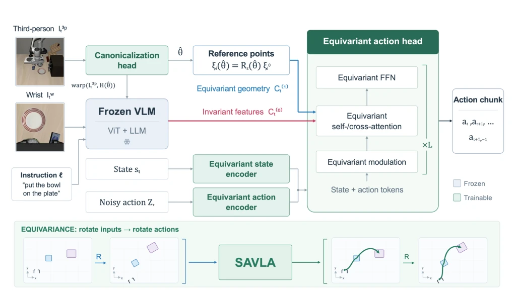
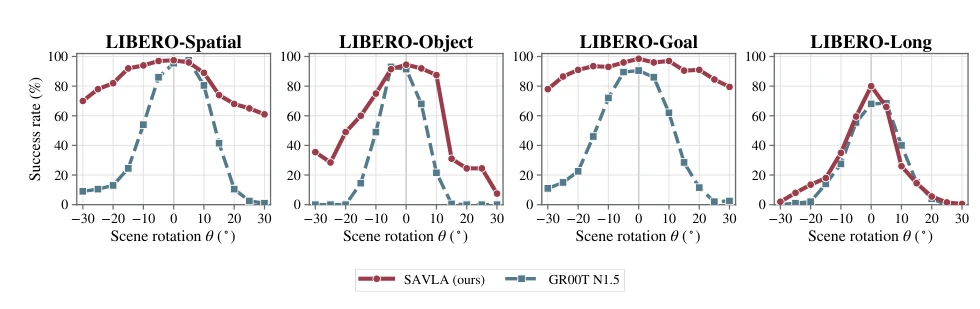
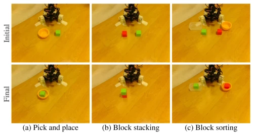
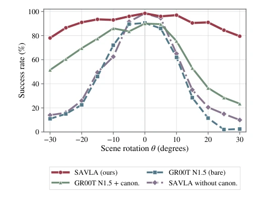

SAVLA forcibly injects "rotational symmetry" muscle memory into VLA models, attempting to solve the stubborn problem of traditional models becoming "face blind" when the angle changes. This "frozen backbone + external symmetry head" stitching strategy is indeed clever, utilizing the semantic capabilities of large models while compensating for geometric shortcomings. However, the authors bet all hopes on "orthogonal normalization" image transformations; once the camera view is skewed excessively or desktop reflections cause plane estimation errors, this "pseudo-symmetry" mechanism will collapse instantly, as it is merely approximate symmetry rather than mathematically absolute symmetry. Furthermore, experiments mainly rely on simulation environments; although robustness improvement in the real world has been achieved, the magnitude is limited, suggesting there is still a long way to go from "perfect symmetry in simulation" to "chaotic symmetry in reality".
Existing Vision-Language-Action (VLA) models, although powerful, are essentially "rote memorizing" imitators. They learn spatial capabilities from demonstration data but lack explicit geometric priors, leading to extreme sensitivity to minor changes in scene layout, camera views, and robot initial states [5]-[7]. Although existing work has attempted to enhance spatial reasoning by injecting self-centered 3D position encoding or adaptive spatial action grids [9], these strategies do not enforce rotational equivariance at the architecture level. Other point cloud-based methods [10], [11], although building geometric symmetry, are difficult to directly integrate into VLA models that mainly rely on RGB encoders. SAVLA aims to solve this pain point: under the premise of keeping the pre-trained VLM backbone frozen, enabling the model to possess rotation invariance through architecture design, thereby remaining reliable under unseen views and reducing reliance on massive rotation data augmentation.
SAVLA adopts an end-to-end architecture of "frozen backbone + symmetry head + normalization". The overall process is: first, through a lightweight Canonicalizer module, estimating scene rotation angles from third-person images, using homography transformations to "straighten" tilted view images into canonical views, while rotating geometric reference points to maintain coordinate consistency. Next, the normalized images are input into the frozen VLM backbone, where extracted features are treated as rotation invariants (Invariant). Subsequently, these invariant features along with rotated geometric reference points (Equivariant) are passed to the action head via a "typed interface". The action head is built based on Flow-Matching, internally strictly designed for SO(3) equivariance: it decomposes states and actions into scalar channels (invariant) and vector channels (equivariant), and maintains this type separation in normalization, modulation, attention mechanisms, and feedforward networks. For example, in the attention mechanism, scalar and vector parts calculate dot products separately, ensuring attention weights remain invariant; in activation functions, nonlinearity is applied only to the vector parallel component, while the perpendicular component remains unchanged. Finally, the action head outputs an equivariant velocity field, integrated to generate action chunks, achieving approximate end-to-end rotational symmetry from visual input to action output.

Fig. 1. SAVLA architecture. The canonicalization head estimates the scene rotation ˆθ from the third-person image, constructs the canonical view warp(I3p t , H(ˆθ)) for the frozen VLM, and rotates the fixed reference points. Equivariant encoders embed the state and the noisy action. Equivariant flow-matching head outputs the action chunk.
The study conducted a comprehensive evaluation on four suites of the LIBERO benchmark, with GR00T N1.5 as a strong baseline. Results show SAVLA improved average success rate by 5.1 percentage points (from 86.5% to 91.6%). Most surprisingly is the rotational generalization capability: in the LIBERO-Goal task, facing scene rotation, SAVLA's success rate skyrocketed from the baseline 41.5% to 90.4%, far exceeding simple data augmentation strategies. Ablation experiments prove that the equivariant action head and normalization module are indispensable, using either module alone significantly reduces the effect. In addition, in data efficiency tests, when demonstration data is reduced to 10%, SAVLA's advantage further expands. Real robot experiments (SO-101) also verified its effectiveness in grasping, stacking, and other tasks, with average success rate improved by about 10 percentage points, and also showing stronger robustness to rotation.

Fig. 2. Rotation-OOD across all four LIBERO suites. Each panel compares SAVLA with GR00T N1.5 over the same scene-rotation sweep. Mean over the 13 angles (SAVLA vs. GR00T N1.5): Spatial 81.8% vs. 40.5%, Object 53.9% vs. 26.0%, Goal 90.4% vs. 41.5%, and Long 25.4% vs. 22.7%.

Fig. 4. Initial and final frame of the three real-robot tasks.

Fig. 3. Ablation on the LIBERO-Goal rotation experiment. Means over the 13 angles: SAVLA 90.4, SAVLA without canonicalization 46.0, GR00T N1.5 + canonicalization (full) 63.5, GR00T N1.5 41.5.